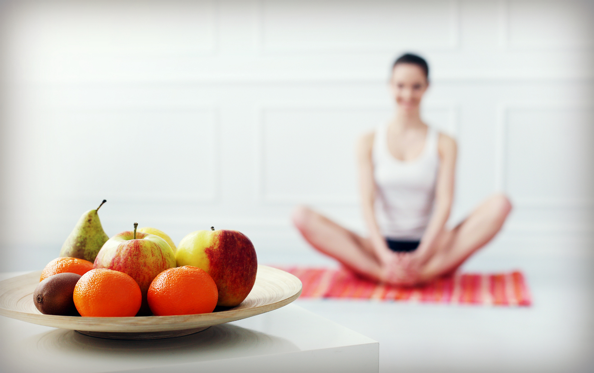
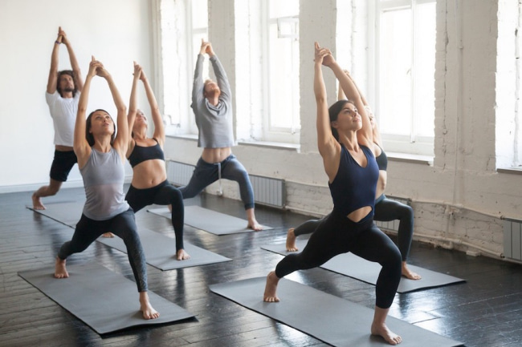
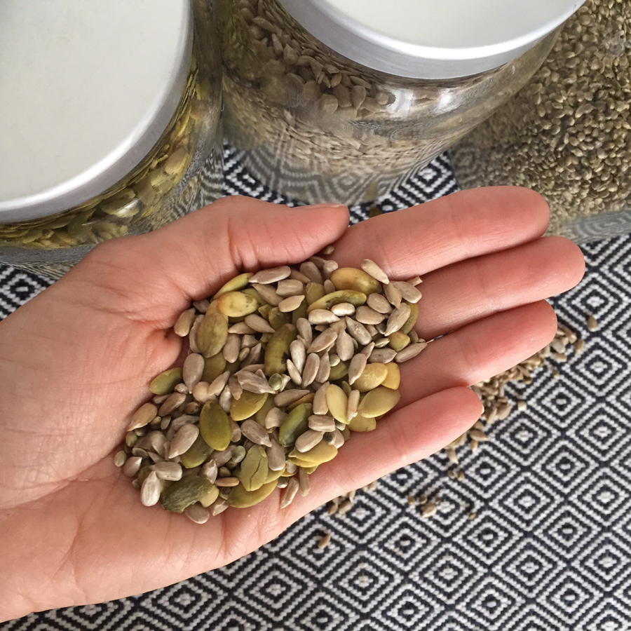
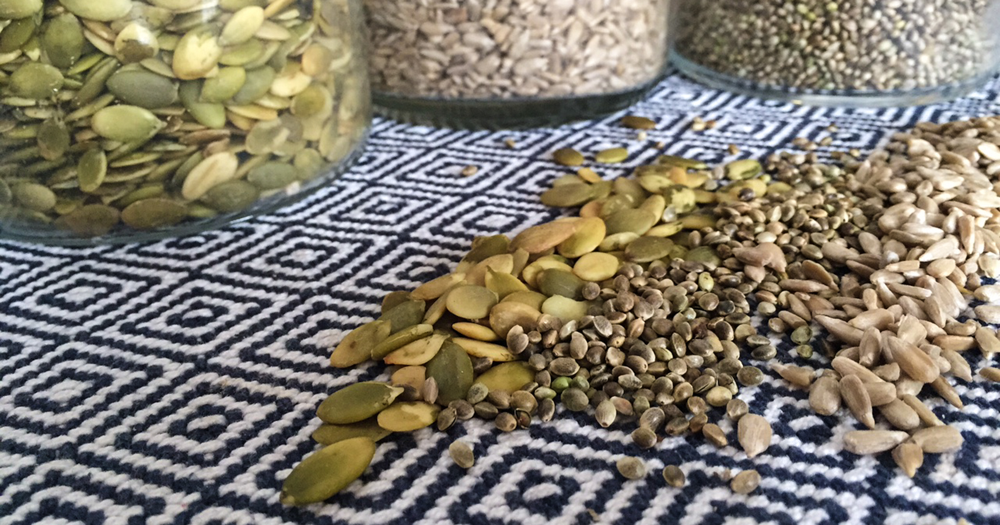
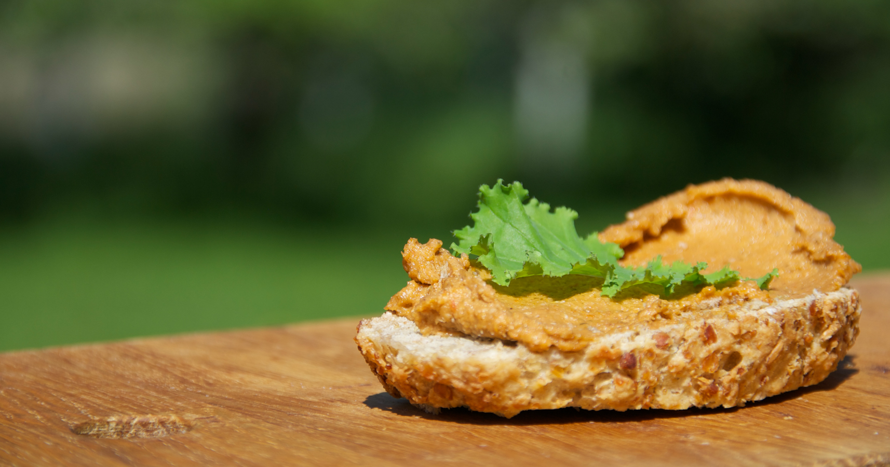

Joogin voimaruokaa-vinkkejä ja lempiresepti
(Meri Mort)

Helppoa, nopeaa, ravitsevaa – utopiaa?
Rehellisesti sanottuna en viihdy keittiössä tai pidä ruokakaupassa käymisestä. En aio hankkia mehulinkoa tai kuivuria (vielä), mutta haluan olla terve ja käydä tasaisella energialla. Joogaohjaajana ja ylipäätään liikkuvana ihmisenä treenaaminen rytmittää syömistä.
Ruuan tulisi olla helposti valmistuvaa, ravitsevaa ja hyvin sulavaa. Useat toimivat ja helpot reseptit olen löytänyt hyvinvointivalmentaja Hanna Stoltin Aamupala – hyvinvointi alkaa aamusta -kirjasta.Poimin kirjasta lempireseptini artikkelin loppuun ja haastattelin Hannaa tämän hetken kuumista perunoista!
Jaksamisen taso ja vatsan sopiva tyhjyys tulevat useasti esille keskusteluissa meillä kotona jossa kaksi joogia tasapainottelevat energiansaannin ja harjoituksen sujuvuuden kanssa. Makumaailmat ja sosiaaliset ruokahetket ovat minulle elämän suuria nautintoja. Seuraavassa muutamia vinkkejä siihen, kuinka säilyttää tasapainoinen harjoitus nälkää näkemättä.
Näin saat pähkinät ja siemenet sulamaan paremmin
On jo yleisesti tiedossa että pähkinät ja siemenet ovat ravintorikkaita. Ne olisi kuitenkin hyvä ainakin liottaa, parhaassa tapauksessa myös idättää ennen syömistä. Liottaminen poistaa haitta-aineita ja idättäminen vapauttaa niissä aivan uudenlaisen energian sekä ravinteita jotka muuten säilyvät ”uinuvina”, valottaa Hanna ja kehottaa tutustumaan idättämiseen.
Olen päässyt siementen kanssa jo niin pitkälle, että jos olen tekemässä aamulla smoothieta tai raakapuuroa johon käytän pähkinöitä – laitan ne likoomaan veteen jääkaappiin edellisenä iltana. Pähkinät sulavat helpommin liottamisen jälkeen ja tehosekoitin kiittää pehmentymisestä.
Rasvaa sisäisesti nivelet laadukkailla öljyillä
Kuumennettaessa kannattaa olla rasvojen kanssa tarkkana, sillä väärä öljy, vaikka olisi miten terveellinen kylmänä, voi vahingoittua kuumuudesta ja muuttua haitalliseksi. Paistamiseen Hanna käyttää lähinnä punaista palmuöljyä, koska se kestää erinomaisesti kuumennusta ja sisältää paljon ravinteita, sekä kookosöljyä. Lisäksi miedolla lämmöllä paistaessa käytössä on oliiviöljy. Hanna ei suosittele teollisia maissi- ta auringonkukkaöljyjä. Niitä kutsutaankin usein roskaöljyiksi ja pikaruokaketjut käyttävät juuri niitä.
Itse otan myös ruokalusikallisen suomalaista hamppuöljyä joka päivä ja lorautan surutta luomu-oliiviöljyä kaikkeen ruokaan. Joogin on hyvä rasvata niveliä. Jos naisen kehon rasvaprosentti tippuu liian alhaiseksi, jopa kuukautiskierto voi häiriintyä. Kuiva keho ei ole terve keho. Joogaopettajani Helen Noakes kysyykin tunneilla: Are you feeling juicy? Onko mehukas olo?
Pysy kylläisenä jotta jaksat
Hannan mukaan on yllättävän vaihtelevaa mitkä ruoka-aineet pitää kenetkin pitkään kylläisenä. Ihmisten ruoansulatus toimivat niin eri lailla. Varmoja perusvinkkejä ovat kasvipohjaiset proteiinit. Hannan suosikkeja ovat mm. kikherneet salaatin kera, tai kikherneistä tehty levite siemenleivän päällä. Pähkinöitä voi lisäillä ruokaan kuin ruokaan. Hiilihydraateista saa hyvin nopeasti energiaa, mutta ei välttämättä juuri sitä pitkäkestoista.
Kikherneet ja mustapavut on myös meidän joogakodin ruokailun kulmakiviä. Purkkipavut tarvitsee vain huuhtoa, jonka jälkeen ne voi kipata salaattiin, wokkiin, pastan kanssa, pannuun, pataan, uuniin tai tehosekoittimeen.Yrtit antavat hyvin makua papuruokiin.Jos haluaa säästää rahaa ja omistaa ison pakastimen, voi kuivat pavut keitellä itse suuremmassa erässä ja laittaa pakkaseen sopivina kerta-annoksina.
Kun yhdistän kasvikset, kasvisproteiinin ja hieman hyvää rasvaa, jaksan vaikka mitä!
Hanna hakeekin ruoanlaitossaan hyvää kuitu+rasva+proteiiniyhdistelmää. Esimerkiksi vihreä salaatti jonka päälle Hanna laittaa linssejä tai kikherneitä ja lopuksi loraus hyvää öljyä ja ehkä pari pähkinääkin. Annosta voi koota sen mukaan, miten pitkään nälkä pitää pitää loitolla ja onko menossa urheilemaan. Pähkinät sulavat hitaasti, useimpien vatsa työstää niitä pidempään ja liian täysi olo voi sotkea joogaharjoitusta. Niitä ei kannata syödä siis liikaa.
Vain kokeilemalla tiedät
Hanna suosittelee usein omille asiakkaille pitämään ruokapäiväkirjaa parin viikon ajan ja kirjaa siihen ruokien lisäksi fiilikset, oman olon. Ennen ja jälkeen ruokailun ja sen miten hyvin ruoka toimi treenin kanssa yhteen: alkoiko heikottaa, oliko liian täysi olo, jaksoiko hyvin. Näin alkaa oppia paremmin kuuntelemaan omaa kroppaa ja löytää niitä juuri itselle paremmin toimivia vaihtoehtoja.
Joillekin raa’at ruoat ovat liian raskaita vatsan käsiteltäväksi – silloin kannattaa kuunnella omaa kehoa ja esim. kypsentää kasvikset lempeillä menetelmillä, kuten höyryttämällä.Kohtuus kaikessa, syö osa raakana ja kypsennä osa ruoasta.
Leivän päälle
Kasvissyöjänä arvostan herkullisia, ravintorikkaita leivänpäällisiä, joissa on hyvälaatuisia rasvoja.Monen veganismikokeilut tyssäävät juuston himoon. Se saattaa kieliä rasvan puutteesta ruokavaliossa. Mitä sitten leivän päälle ellei juustoa? Tätä levitettä laitan leivälle, lusikoin ruuan kylkeen ja sopiipa se suolaisten leivonnaistenkin täytteeksi. Valkosipulin korvaan wasabijauheella tai chilillä.
SIEMENLEVITE
- 1 dl auringonkukansiemeniä
- 1 dl seesaminsiemeniä
- 1 dl kurpitsansiemeniä
- 1 dl auringonkuivattuia tomaattia
- 1/2 valkosipulin kynsi
- 1/2 dl oliiviöljyä
- ruususuolaa
Liota siemeniä vedessä parit tuntia ja huuhtele huolella. Laita kaikki ainekset paitsi suola tehosekoittimeen ja aja tasaiseksi massaksi. Lisää tarvittaessa oliiviöljyä, kunnes seos on sopivan juoksevaa. Mausta valmis levite suolalla. Nauti maan antimista esimerkiksi hyvän leivän päällä tai salaattien kyljessä!
Resepti: Hanna Stoltin kirjasta: Aamupala – hyvinvointi alkaa aamusta
Valokuvat: Hanna Stolt, Meri Mort, Heidi Merilä,Google.